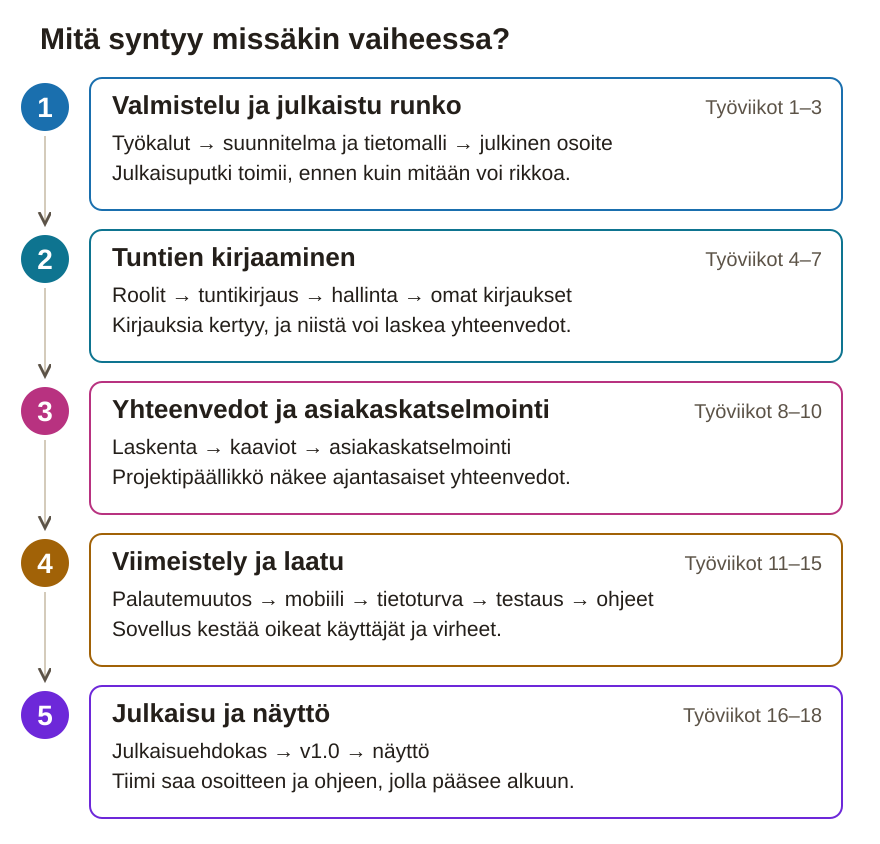

Paperinen työpaketti
Työaikaseuranta mainostoimistolle: Svelte, Express, SQLite ja julkaisu tuotantoon
18 työviikkoa · päivätön aikataulu · luovutus 18. työviikon perjantai
Tämä paketti on aikataulu ja tarkistuslista tilanteisiin, joissa sivusto ei ole auki. Projektipäiväkirja kirjoitetaan sivustolla ja viedään repositoryn project-docs-kansioon. Rasti tässä vihossa ei ole palautus: työ on aina Git-repositoryssa.
Aikataulu on päivätön: työviikko 1 on se viikko, jolla opiskelija aloittaa, ja projekti kestää 18 työviikkoa.
Julkiseen repositoryyn ei laiteta henkilötietoja, koulun tunnisteita eikä muiden nimiä. Tekijänimestä sovitaan ohjaajan kanssa.
TuntiTutka on mainostoimiston sovellus työajan seurantaan. Siinä työntekijä kirjaa tuntinsa nopeasti myös puhelimella ja näkee vain omat kirjauksensa. Projektipäällikkö perustaa projektit ja näkee aina ajantasaiset yhteenvedot projekteittain, henkilöittäin ja tehtävälajeittain.

1. Valmistelu ja julkaistu runko · työviikot 1–3. Otat työkalut käyttöön, teet hyväksytyn suunnitelman ja tietomallin ja viet tyhjän rungon julkiseen osoitteeseen. Tietomalli tehdään ensin, koska kaikki yhteenvedot lasketaan sen tauluista, ja julkaisu on helpointa korjata, kun rikottavaa on vähän.
2. Tuntien kirjaaminen · työviikot 4–7. Rakennat kirjautumisen ja roolit, tuntikirjauksen, projektien hallinnan ja omien kirjausten käsittelyn. Vaiheen lopussa työntekijät kirjaavat tunnit oikeisiin projekteihin ja sinä kirjaat omasi, joten raportteihin kertyy aitoa dataa.
3. Yhteenvedot ja asiakaskatselmointi · työviikot 8–10. Lasket kirjauksista yhteenvedot kolmella ryhmittelyllä ja teet niistä kaaviot. Asiakkaan roolissa oleva testaaja kokeilee väliversiota, ja hänen palautteensa ohjaa loppua.
4. Viimeistely ja laatu · työviikot 11–15. Toteutat katselmoinnin tärkeimmän muutoksen, teet sovelluksesta puhelimella ja näppäimistöllä toimivan ja arvioit tietoturvan. Testaus ja dokumentaatio kootaan valmiiksi ennen julkaisua.
5. Julkaisu ja näyttö · työviikot 16–18. Ulkopuolinen testaaja kokeilee julkaisuehdokasta pelkän kirjallisen ohjeen avulla. Korjaat estävät virheet, julkaiset v1.0:n ja kokoat näyttöaineiston.
Viikon työvaihe on tämän sivuston työohje. Kun toteutat muutoksen sovellukseen, kirjaa se GitHub-issueksi hyväksymiskriteereineen ja tee se Työtapa-sivun kuudella askeleella. Testin tulos kirjataan issueen heti, viikon yhteenveto projektipäiväkirjaan viikon lopussa.
| Vko | Ajoitus | Viikon aihe | Vaihe |
|---|---|---|---|
| 1 | Työviikko 1 / 18 | Aloitus | 1 |
| 2 | Työviikko 2 / 18 | Suunnitelma ja tietomalli | 1 |
| 3 | Työviikko 3 / 18 | Julkaistu runko | 1 |
| 4 | Työviikko 4 / 18 | Kirjautuminen ja roolit | 2 |
| 5 | Työviikko 5 / 18 | Tuntikirjaus | 2 |
| 6 | Työviikko 6 / 18 | Hallintanäkymät | 2 |
| 7 | Työviikko 7 / 18 | Omat kirjaukset haltuun | 2 |
| 8 | Työviikko 8 / 18 | Yhteenvetojen laskenta | 3 |
| 9 | Työviikko 9 / 18 | Raporttinäkymä ja kaaviot | 3 |
| 10 | Työviikko 10 / 18 | Asiakaskatselmointi | 3 |
| 11 | Työviikko 11 / 18 | Palautemuutos | 4 |
| 12 | Työviikko 12 / 18 | Mobiili ja saavutettavuus | 4 |
| 13 | Työviikko 13 / 18 | Tietoturva | 4 |
| 14 | Työviikko 14 / 18 | Testausviikko | 4 |
| 15 | Työviikko 15 / 18 | Laatu ja dokumentointi | 4 |
| 16 | Työviikko 16 / 18 | Julkaisuehdokas ja julkaisutestaus | 5 |
| 17 | Työviikko 17 / 18 | Julkaisu v1.0 | 5 |
| 18 | Työviikko 18 / 18 | Näyttö | 5 |
Palautus viimeistään 18. työviikon perjantai. Sivusto: tehtävien tarkat ohjeet, toteutusavut ja projektipäiväkirja.
Yhteys kokonaisprojektiin: Lähtöaineistona on toimeksianto, ja tällä viikolla syntyvät kehitysympäristö, julkinen repository ja käynnistyvä Svelte-runko. Git-historia on itsessään työnäyte, joten se aloitetaan ensimmäisenä työpäivänä. Kysymyslistan vastauksilla rajaat työviikolla 2 sen, mitä rakennetaan.
Viikon tavoite: Svelte-sovellusrunko käynnistyy omalla koneellasi README:n ohjeilla, ja julkinen repository on tarkistettu.
GitHub Desktop: kuvaohje ilman Git-komentoja
Työvaihe 1 / 4 · Asenna työkalut ja kirjaa versiot
node -v ja npm -v. Kirjaa lisäksi GitHub Desktopin versio kohdasta Help → About GitHub Desktop tai komentorivin Gitin versio komennolla git --version.tuntitutka/ ja tee sen juureen README.md. Kirjoita tiedostoon taulukko: työkalu, versio ja tarkistuskomento, esimerkiksi Node 20.11.1 → node -v.Valmis kun: README.md:ssä on taulukko, jossa jokaisella työkalulla on versio ja tarkistuskomento.
Tallenna työnäyte: README.md repositoryyn ensimmäisessä commitissa (työvaihe 4). Versiot myös työviikon 1 päiväkirjaan.
Työvaihe 2 / 4 · Perusta repository ja tee julkisuustarkistus
Valmis kun: Repository on olemassa, ja ohjaaja on kuitannut julkisen repon tarkistuslistan kirjallisesti.
Tallenna työnäyte: Projektikansion polku ja julkisuusasioiden tila työviikon 1 päiväkirjaan; lisää repositoryn osoite julkaisemisen jälkeen. Avoimiksi jääneet asiat suunnitelman OHJAAJA-kenttiin.
Työvaihe 3 / 4 · Luo Svelte-runko ja kansiorakenne
client/ komennolla npm create vite@latest (pohja svelte) ja aja npm install.npm run dev ja avaa sovellus selaimessa. Ota kuvakaappaus käynnistyneestä rungosta.server/ ja project-docs/. Lisää .gitignore, joka estää kansion node_modules/, tietokantatiedostot *.db ja tiedoston .env.Valmis kun: npm run dev avaa rungon selaimessa, ja kansiot client/, server/ ja project-docs/ sekä README ja .gitignore ovat olemassa.
Tallenna työnäyte: Kuvakaappaus käynnistyneestä rungosta työviikon 1 päiväkirjaan. Kansiot ja README menevät repositoryyn työvaiheen 4 commitissa.
Työvaihe 4 / 4 · Kirjoita kysymyslista ja vie työ GitHubiin
project-docs/kysymykset.md. Tavoite on vähintään kuusi kysymystä.Valmis kun: Kysymyslistassa on vähintään kuusi kysymystä, ja ensimmäinen commit näkyy GitHubissa.
Tallenna työnäyte: project-docs/kysymykset.md repositoryyn. Ensimmäisen commitin tunnus ja kysymykset työviikon 1 päiväkirjaan.
Viikon lopputarkistus: Repositoryssa on käynnistyvä Svelte-runko ja README, jossa on käynnistyskomennot; ohjaaja on kuitannut julkisen repon tarkistuslistan; kysymyslistassa on vähintään kuusi kysymystä.
Työnäyte Git-repositoryyn ennen rastia: commit-historian alku, kuvakaappaus dev-palvelimesta selaimessa, kuitattu julkisuustarkistuslista ja kysymyslista (p1, k1; s12 alkaa).
Yhteys kokonaisprojektiin: Työviikon 1 kysymyslista saa nyt vastaukset, ja toimeksianto muuttuu priorisoiduiksi käyttäjätarinoiksi, tietomalliksi ja GitHub-issueiksi. Tietomallin päätös ”lasketaan, ei tallenneta” ratkaisee jo nyt, ettei sovellukseen synny summatauluja, joita pitäisi pitää ajan tasalla. Hyväksytyn suunnitelman varaan rakennat työviikolla 3 tietokannan ja julkaistun rungon.
Viikon tavoite: Ohjaaja hyväksyy suunnitelmasi: jokaisella pakollisen ytimen (P0) tarinalla on GitHub-issue, hyväksymiskriteerit ja työmääräarvio.
Työvaihe 1 / 4 · Kirjoita käyttäjätarinat ja priorisoi ne
Valmis kun: Jokaisella tarinalla on 2–4 hyväksymiskriteeriä ja perusteltu prioriteetti, ja ohjaajan vastaukset on kirjattu kysymyslistaan.
Tallenna työnäyte: Käyttäjätarinat ja kysymyslista vastauksineen project-docs/-kansioon. P0-rajaus työviikon 2 päiväkirjaan.
Työvaihe 2 / 4 · Piirrä tietomalli ja kirjaa laskentaperiaate
Valmis kun: Tietomallikaaviossa on kaikki kuusi taulua avaimineen, ja periaate ”summia ei tallenneta” on kirjattu kaavioon ja suunnitelmaan.
Tallenna työnäyte: Tietomallikaavio kuvana project-docs/-kansioon. Taulut ja tallentamatta jätettävät summat työviikon 2 päiväkirjaan.
Työvaihe 3 / 4 · Vertaa tietovarastoja ja perustele valinta
Valmis kun: Vertailutaulukossa on kolme vaihtoehtoa omilla kriteereilläsi, ja valinta on perusteltu suunnitelmassa omilla tauluillasi.
Tallenna työnäyte: Vertailutaulukko project-docs/-kansioon. Valinta perusteluineen työviikon 2 päiväkirjaan.
Työvaihe 4 / 4 · Piirrä rautalangat ja pilko P0 issueiksi
suunnitelma.md ja tallenna se polkuun project-docs/suunnitelma.md commitilla.Valmis kun: Jokaisella P0-tarinalla on issue, hyväksymiskriteerit ja arvio tunteina, ja ohjaajan hyväksyntä on kirjattu.
Tallenna työnäyte: Rautalangat ja suunnitelma.md project-docs/-kansioon. Linkki issue-tauluun ja ohjaajan hyväksyntään työviikon 2 päiväkirjaan.
Viikon lopputarkistus: project-docs/suunnitelma.md on repossa ja ohjaaja on hyväksynyt rajauksen kirjatulla kommentilla; jokaisella P0-tarinalla on issue, hyväksymiskriteerit ja arvio tunteina.
Työnäyte Git-repositoryyn ennen rastia: suunnitelma.md, tietomallikaavio, vertailutaulukko, issue-taulu ja ohjaajan kirjattu hyväksyntä (s1, s4, s5, s8, p8; s6 alkaa arvioista).
Yhteys kokonaisprojektiin: Työviikon 2 tietomalli muuttuu nyt ajettavaksi skeemaksi, ja sovellus saa palvelimen. Koko julkaisuputki testataan tällä viikolla, koska se on helpointa korjata, kun sovelluksessa ei vielä ole mitään rikkoutuvaa. Samaa julkaisuputkea käytät julkaisuehdokkaaseen ja v1.0:aan asti.
Viikon tavoite: Kuka tahansa voi avata TuntiTutkan julkisesta osoitteesta, ja osoite /api/health vastaa toisen henkilön laitteella.
Työvaihe 1 / 4 · Rakenna Express-palvelin ja health-reitti
server/index.js, joka tarjoaa Sveltin tuotantobuildin staattisena. Build on valmiiksi käännetty, julkaistava versio sovelluksesta./api/health, joka palauttaa JSONin, esimerkiksi { tila: "ok" }, ja HTTP-koodin 200. Se on oman rajapintasi (API) ensimmäinen osoite./api-kutsut Express-palvelimelle./api/health sekä Expressin osoitteessa että Viten kehityspalvelimen kautta. Saman vastauksen pitää näkyä molemmissa.Valmis kun: /api/health palauttaa 200 ja JSONin sekä Expressin osoitteessa että Viten proxyn kautta.
Tallenna työnäyte: server/index.js, reitti ja proxy-asetus commitilla repositoryyn.
Työvaihe 2 / 4 · Luo SQLite-skeema init-skriptillä
server/init-db.js, joka luo työviikon 2 tietomallin taulut tyhjään tietokantaan.server/db.js, jotta reitit eivät avaa omia yhteyksiään.Valmis kun: Init-skripti luo tyhjään tietokantaan kaikki tietomallin taulut, eikä tietokantatiedosto ole repositoryssa.
Tallenna työnäyte: server/init-db.js ja server/db.js commitilla. Skeema ja init-skripti pohjustavat tietovarastoyhteyden työnäytettä (s9).
Työvaihe 3 / 4 · Vertaa julkaisualustat ja perustele valinta
Valmis kun: Alustavertailu on taulukkona, ja valinta on perusteltu suunnitelmassa, ennen kuin loit tilin mihinkään palveluun.
Tallenna työnäyte: Alustavertailu project-docs/-kansioon. Valittu alusta ja valintakriteerit työviikon 3 päiväkirjaan.
Työvaihe 4 / 4 · Julkaise runko ja kirjoita Svelte-selvitys
.env ole repositoryssa./api/health omalla laitteellaan ja kirjaa tulos.Valmis kun: /api/health palauttaa 200 julkisessa osoitteessa toisen henkilön laitteella, ja selvitys ja alustaperustelu ovat repositoryssa.
Tallenna työnäyte: Julkinen osoite README:hen, julkaisulokin kuvakaappaus ja selvitys project-docs/-kansioon. Mitä julkaisussa meni pieleen ja miten korjasit sen, työviikon 3 päiväkirjaan.
Viikon lopputarkistus: /api/health palauttaa 200 julkisessa osoitteessa toisen henkilön selaimella testattuna; init-skripti luo skeeman tyhjään tietokantaan; k2-selvitys ja alustaperustelu ovat repossa.
Työnäyte Git-repositoryyn ennen rastia: julkinen osoite README:ssä, julkaisulokin kuvakaappaus, init-skripti, k2-selvitys ja alustavertailu (k2, s14 ensijulkaisu; s9 pohjustuu).
Yhteys kokonaisprojektiin: Julkaistun rungon päälle tulee ensimmäinen oikea toiminto: käyttäjät ja roolit. Kirjaukset, hallinta ja raportit rajataan roolilla, joten roolit tehdään nyt, eikä jokaista reittiä ja näkymää tarvitse myöhemmin avata uudelleen. Työviikolla 5 kirjautunut työntekijä kirjaa ensimmäiset tuntinsa.
Viikon tavoite: Työntekijä ja projektipäällikkö kirjautuvat sisään ja näkevät roolinsa mukaisen navigaation, ja suojattu reitti vastaa ilman kirjautumista koodilla 401.
Työvaihe 1 / 4 · Toteuta käyttäjätaulu ja siemendata
kayttaja-taulu, jossa on nimi, sähköposti, salasanan hash, rooli ja puhelin.Valmis kun: Tietokannassa on yksi projektipäällikkö ja kaksi työntekijää, eikä yhtään salasanaa ole tallennettu selväkielisenä.
Tallenna työnäyte: Taulu ja siemenskripti commitilla repositoryyn.
Työvaihe 2 / 4 · Vertaa istuntotapoja ja päätä ohjaajan kanssa
Valmis kun: Vertailu on kirjoitettu tämän sovelluksen ehdoilla, ja yhteinen päätös on kirjattu ohjaajan nimen ja ajankohdan kanssa.
Tallenna työnäyte: Vertailu ja muistio project-docs/-kansioon. Päätös perusteluineen työviikon 4 päiväkirjaan.
Työvaihe 3 / 4 · Toteuta kirjautuminen ja roolin mukainen navigaatio
client/src/lib/istunto.js. Kirjautuminen säilyy, kun sivu päivitetään.Valmis kun: Molemmat roolit kirjautuvat sisään ja ulos, kirjautuminen säilyy sivun päivityksessä, eikä työntekijä näe hallintalinkkejä.
Tallenna työnäyte: Kuvakaappaukset navigaatiosta molemmilla rooleilla työviikon 4 päiväkirjaan. Koodi commitilla.
Työvaihe 4 / 4 · Suojaa API-reitit middlewarella
Valmis kun: Suora kutsu suojattuun reittiin ilman kirjautumista palauttaa 401, ja työntekijän kutsu projektipäällikön reittiin palauttaa 403.
Tallenna työnäyte: Middleware-koodin commit. Mitä middleware-ketju tarkistaa, missä järjestyksessä ja mitkä koodit sait, työviikon 4 päiväkirjaan.
Viikon lopputarkistus: Väärä salasana antaa selkeän suomenkielisen virheilmoituksen; työntekijä ei näe hallintanavigaatiota; kirjautuminen säilyy sivun päivityksessä; suora API-kutsu ilman kirjautumista palauttaa 401.
Työnäyte Git-repositoryyn ennen rastia: kirjattu vertailu ja yhteinen päätös, kuvakaappaukset molemmilla rooleilla ja middleware-koodin commit (p9; s7 osa).
Yhteys kokonaisprojektiin: Työviikolla 4 syntyneet kirjautuminen ja roolit kertovat, kuka kirjaa. Nyt rakennat itse kirjauksen: lomakkeen, tallennusreitin ja omien kirjausten listan. Kaikki myöhemmät yhteenvedot lasketaan näistä riveistä, joten tämän viikon validointi ratkaisee, voiko raportteihin luottaa.
Viikon tavoite: Työntekijä kirjaa tunnit projektille ja tehtävälajille alle 30 sekunnissa ja näkee kirjauksen omassa listassaan.
Työvaihe 1 / 4 · Rakenna kirjauslomake omista Svelte-komponenteista
client/src/kirjaus/. Kentät ovat projekti, tehtävälaji, tunnit, päivä ja selite. Valmista käyttöliittymäkirjastoa ei käytetä.bind:value) lomakekenttiin, jotta lomakkeen tila on aina sama kuin kentissä näkyy.Valmis kun: Lomake näkyy selaimessa kaikkine kenttineen, ja komponenttijako on kirjattu suunnitelmaan.
Tallenna työnäyte: Komponentit commitilla kansioon client/src/kirjaus/. Komponenttijakokaavio ja kuvakaappaus lomakkeesta työviikon 5 päiväkirjaan.
Työvaihe 2 / 4 · Toteuta tallennusreitti ja validointi
POST /api/kirjaukset tiedostoon server/routes/kirjaukset.js. REST-tyylissä osoite kertoo kohteen ja HTTP-metodi toiminnon: POST lisää ja GET hakee.Valmis kun: Kelvollinen kirjaus tallentuu SQLiteen. Virheellinen syöte hylätään sekä lomakkeessa että palvelimella, ja suomenkielinen viesti näkyy kentän vieressä.
Tallenna työnäyte: Reitti ja validointi commitilla. Validointisäännöt taulukkona (kenttä → sääntö → virheviesti) työviikon 5 päiväkirjaan.
Työvaihe 3 / 4 · Näytä omat kirjaukset listana
GET /api/kirjaukset/omat, joka palauttaa vain kirjautuneen käyttäjän kirjaukset.KirjausLista.svelte.Valmis kun: Omat kirjaukset näkyvät listassa myös sivun päivityksen jälkeen, eikä listassa näy muiden käyttäjien kirjauksia.
Tallenna työnäyte: Reitti ja lista commitilla. Kuvakaappaus lomakkeesta ja listasta työviikon 5 päiväkirjaan.
Työvaihe 4 / 4 · Testaa virhesyötteet ja mittaa kirjausaika
tunnit=25 suoraan rajapintaan curlilla. curl on komentorivin työkalu, jolla rajapintaa kutsutaan ilman selainta. Palvelimen pitää hylätä kirjaus.Valmis kun: Jokainen virhesyöte hylätään sekä lomakkeessa että suorassa rajapintakutsussa, ja kirjaus onnistuu alle 30 sekunnissa.
Tallenna työnäyte: Testitaulukko ja mitattu kirjausaika sekunteina työviikon 5 päiväkirjaan.
Viikon lopputarkistus: Kirjaus tallentuu SQLiteen ja näkyy listassa sivun päivityksen jälkeenkin; virheellinen syöte ei tallennu ja käyttäjä näkee suomenkielisen virheviestin kentän vieressä; kirjaus onnistuu alle 30 sekunnissa. Ota aika.
Työnäyte Git-repositoryyn ennen rastia: komponenttijakokaavio, kuvakaappaus lomakkeesta ja listasta, validointitestien tulostaulukko ja commitit (p6, s9, k3; k5 toteutus alkaa).
Yhteys kokonaisprojektiin: Kirjauslomake tarvitsee projekteja ja tehtävälajeja, ja ilman hallintaa ne pitäisi syöttää tietokantaan käsin. Nyt projektipäällikkö perustaa ne itse ja päättää jäsenyyksillä, kuka kirjaa mihinkin projektiin. Jäsenyys rajaa kirjaukset oikeisiin projekteihin, mikä on raporttien oikeellisuuden ehto.
Viikon tavoite: Projektipäällikkö perustaa projektin ja liittää siihen työntekijän, ja työntekijä näkee kirjauslomakkeessa vain omat projektinsa.
Työvaihe 1 / 4 · Valitse reitityskirjasto ja jaa sovellus reitteihin
Valmis kun: Valinta on perusteltu suunnitelmassa, kirjasto on asennettu, ja jokaisella reittikartan rivillä on näkymä ja sallittu rooli.
Tallenna työnäyte: Kirjastovertailu ja reittikartta project-docs/-kansioon, package.json-diffi commitissa.
Työvaihe 2 / 4 · Toteuta projektien hallinta (CRUD)
Valmis kun: Projektipäällikkö voi luoda, listata, muokata ja poistaa projekteja hallintanäkymässä ilman tietokannan käsin muokkausta.
Tallenna työnäyte: Reitit ja näkymä commitilla. Kuvakaappaus hallintanäkymästä työviikon 6 päiväkirjaan.
Työvaihe 3 / 4 · Toteuta tehtävälajien ja projektityyppien hallinta
Valmis kun: Projektipäällikkö voi lisätä tehtävälajin ja projektityypin ja muokata niiden nimeä ja kuvausta, ja mahdollinen kuormitusrajaus on kirjattu.
Tallenna työnäyte: Koodi commitilla. Kuormitusrajauksesta tehdyt päätökset työviikon 6 päiväkirjaan.
Työvaihe 4 / 4 · Toteuta projektin jäsenyydet
projektin_jasen-tauluun.Valmis kun: Työntekijän kirjauslomakkeessa näkyvät vain projektit, joihin hänet on liitetty, ja jokainen hallintareitti palauttaa työntekijälle 403 myös suoralla URL-osoitteella.
Tallenna työnäyte: Testattu reittikartta ja demo molemmilla rooleilla työviikon 6 päiväkirjaan.
Viikon lopputarkistus: Työntekijän kirjauslomakkeessa näkyvät vain projektit, joihin hänet on liitetty; vain projektipäällikkö pääsee hallintanäkymiin (testattu myös suoralla URL-osoitteella); reittikartta on dokumentoitu.
Työnäyte Git-repositoryyn ennen rastia: perusteltu kirjastovalinta package.json-diffillä, reittikartta ja demo molemmilla rooleilla (p7, k4; s7 laajenee).
Yhteys kokonaisprojektiin: Kirjaukset ja jäsenyydet ovat nyt olemassa. Tällä viikolla työntekijä hallitsee omia kirjauksiaan turvallisesti, ja sinä alat kirjata omat projektituntisi TuntiTutkaan. Oma käyttö tuottaa työviikkojen 8 ja 9 raportteihin aitoa dataa ja paljastaa käytettävyysongelmat ennen asiakasta.
Viikon tavoite: Työntekijä muokkaa ja poistaa vain omia kirjauksiaan, suodattaa niitä viikon ja projektin mukaan ja näkee oman viikkosummansa.
Työvaihe 1 / 4 · Toteuta kirjauksen muokkaus ja poisto
PUT ja DELETE /api/kirjaukset/:id, että kirjaus kuuluu kirjautuneelle käyttäjälle. Vieras kirjaus palauttaa 403.Valmis kun: Toisen käyttäjän kirjausta ei voi muokata eikä poistaa edes suoralla rajapintakutsulla: odotettu 403, saatu 403.
Tallenna työnäyte: Omistajuustestin tulos työviikon 7 päiväkirjaan. Koodi commitilla.
Työvaihe 2 / 4 · Lisää suodatus ja päätä viikkokäytäntö
GET /api/kirjaukset/omat?viikko=&projekti=.Valmis kun: Lista näyttää valitun viikon ja projektin kirjaukset, ja viikkokäytäntö on kirjattu suunnitelmaan.
Tallenna työnäyte: Valittu viikkokäytäntö perusteluineen työviikon 7 päiväkirjaan. Koodi commitilla.
Työvaihe 3 / 4 · Laske oma viikkosumma ja päivitä yhteystiedot
GET /api/kirjaukset/omat/viikkosumma?viikko=. Älä tallenna summaa mihinkään.Valmis kun: Viikkosumma täsmää käsin laskettuun eikä sitä ole tallennettu tietokantaan, ja käyttäjä voi päivittää omat yhteystietonsa.
Tallenna työnäyte: Käsin lasketun ja sovelluksen summan vertailu työviikon 7 päiväkirjaan.
Työvaihe 4 / 4 · Aloita omien projektituntien kirjaaminen
Valmis kun: Sovelluksessa on vähintään viikon verran omia kirjauksiasi, ja arvio vs. toteuma -taulukossa on ensimmäiset rivit.
Tallenna työnäyte: Kuvakaappaus omista kirjauksista ja ensimmäinen arvioiden ja toteuman vertailu työviikon 7 päiväkirjaan.
Viikon lopputarkistus: Toisen käyttäjän kirjausta ei voi muokata edes suoralla API-kutsulla (testi kirjattu: odotettu 403, saatu 403); viikkosumma täsmää käsin laskettuun; omia kirjauksia on sovelluksessa vähintään viikon verran.
Työnäyte Git-repositoryyn ennen rastia: API-testin tulos (403), viikkosumman käsinlaskuvertailu, kuvakaappaus omista kirjauksista ja arvio vs. toteuma -taulukon alku (p7, s6, s7).
Yhteys kokonaisprojektiin: Kirjauksia on nyt kertynyt myös omasta käytöstäsi. Tällä viikolla lasket niistä sen tiedon, jota asiakas on koko ajan halunnut: tunnit viikoittain, henkilöittäin ja tehtävälajeittain. Työviikolla 9 samat luvut saavat kaaviot, ja työviikolla 10 asiakkaan roolissa oleva testaaja kokeilee niitä.
Viikon tavoite: Projektipäällikkö näkee ajantasaisen taulukkoyhteenvedon kolmella ryhmittelyllä ja pääsee rivistä yksittäisiin kirjauksiin.
Työvaihe 1 / 4 · Suunnittele raporttien vastausmuoto
GET /api/raportit/viikot?alkaa=&paattyy=&projekti= sekä vastaavat /henkilot ja /tehtavalajit.Valmis kun: Kolmen raporttireitin vastausmuoto ja tyhjän tuloksen muoto on kirjattu ennen ensimmäistäkään kyselyä.
Tallenna työnäyte: Vastausmuoto kuvana tai tekstinä project-docs/-kansioon ja työviikon 8 päiväkirjaan.
Työvaihe 2 / 4 · Rakenna testiaineistot ja laske odotusarvot
Valmis kun: Odotusarvotaulukossa on käsin lasketut summat kolmelle aineistolle ja kolmelle ryhmittelylle, ja se on kirjattu ennen ajoa.
Tallenna työnäyte: Odotusarvotaulukko project-docs/-kansioon ennen ensimmäistä ajoa.
Työvaihe 3 / 4 · Toteuta laskentamoduuli ja raporttireitit
server/laskenta/.server/routes/raportit.js. Reitti vain ottaa parametrit ja kutsuu laskentamoduulia.Valmis kun: Kolme raporttireittiä palauttaa summat, jotka täsmäävät käsin laskettuihin kolmella aineistolla, yksikkötestit menevät läpi eikä skeemassa ole summataulua.
Tallenna työnäyte: Laskentamoduulin ja testien commit. Odotusarvot ja rajapinnan palauttamat luvut rinnakkain työviikon 8 päiväkirjaan.
Työvaihe 4 / 4 · Rakenna taulukkoyhteenveto ja porautuminen
Valmis kun: Projektipäällikkö näkee taulukon kolmella ryhmittelyllä, ja jokaisesta rivistä pääsee niihin kirjauksiin, joista summa syntyy.
Tallenna työnäyte: Kuvakaappaus taulukosta ja porautumisesta työviikon 8 päiväkirjaan. Koodi commitilla.
Viikon lopputarkistus: Kolme raporttireittiä palauttaa summat, jotka täsmäävät käsin laskettuihin odotusarvoihin vähintään kolmella eri testiaineistolla; tietokannassa ei ole summataulua ja skeema todistaa sen; laskentamoduulilla on vähintään kolme yksikkötestiä.
Työnäyte Git-repositoryyn ennen rastia: odotusarvotaulukko (kirjattu ennen ajoa), testiajon tulokset, laskentamoduulin commit ja skeeman kuvaus (s7 päätyönäyte, p4; s10 pohjustuu).
Yhteys kokonaisprojektiin: Työviikon 8 raporttireitit palauttavat oikeat summat, mutta asiakas haluaa nähdä ne yhdellä silmäyksellä. Nyt muunnat saman datan kaavioiksi ja käsittelet tyhjän datan, verkkovirheen ja lataustilan. Näin väliversio on valmis työviikon 10 asiakaskatselmointiin.
Viikon tavoite: Projektipäällikkö näkee viikkotunnit ja tehtävälajijakauman kaavioina, jotka päivittyvät valinnoista eivätkä kaadu tyhjään dataan tai verkkovirheeseen.
Työvaihe 1 / 4 · Valitse kaaviokirjasto ja piirrä ensimmäinen kaavio
Valmis kun: Kirjastovalinta on perusteltu suunnitelmassa, ja ensimmäinen kaavio piirtyy kiinteällä datalla.
Tallenna työnäyte: Kirjastovertailu project-docs/-kansioon, asennus commitilla.
Työvaihe 2 / 4 · Hae raportit ja kirjoita muunnosfunktio
muunnaKaavioksi tiedostoon client/src/raportit/muunna.js, joka muuntaa rajapinnan JSON-vastauksen kaavion tarvitsemaan muotoon.Valmis kun: Muunnosfunktion testi menee läpi, ja kaaviot piirtyvät oikeasta raporttidatasta.
Tallenna työnäyte: Muunnosfunktio ja testi commitilla. Testin ajotulos työviikon 9 päiväkirjaan.
Työvaihe 3 / 4 · Lisää ryhmittelyn ja aikavälin valinta
Valmis kun: Kaavio päivittyy jokaisesta ryhmittelyn ja aikavälin valinnasta.
Tallenna työnäyte: Kuvakaappaukset kaavioista kahdella eri valinnalla työviikon 9 päiväkirjaan.
Työvaihe 4 / 4 · Käsittele virhetilat ja valmistele demodata
Valmis kun: Tyhjä aineisto, verkkovirhe ja lataus näkyvät käyttäjälle viestinä eivätkä tyhjänä ruutuna, ja demodata on valmiina.
Tallenna työnäyte: Virhetilataulukko ja kuvakaappaukset virhetiloista työviikon 9 päiväkirjaan.
Viikon lopputarkistus: Kaaviot piirtyvät oikeasta datasta ja päivittyvät suodattimista; verkkovirhe (testataan katkaisemalla backend) näyttää viestin eikä tyhjää ruutua; muunnosfunktion testi menee läpi; valinta on perusteltu kirjallisesti.
Työnäyte Git-repositoryyn ennen rastia: kirjastovertailu, muunnosfunktion testi sekä kuvakaappaukset kaavioista ja virhetiloista (s10, k4, k3).
Yhteys kokonaisprojektiin: Kirjaus, hallinta ja yhteenvedot toimivat julkaistussa versiossa. Nyt asiakkaan roolissa oleva ulkopuolinen testaaja kokeilee sitä omin käsin, ja selviää, ratkaiseeko sovellus asiakkaan ongelman. Palaute puolivälissä ehtii vielä muuttaa suuntaa, ja tärkein muutos toteutetaan työviikolla 11.
Viikon tavoite: Asiakkaan roolissa oleva testaaja on kokeillut julkaistua versiota molemmilla rooleilla, ja sovitut muutokset ovat priorisoituina issueina.
Lataa dokumentointipohjat (katselmointiloki)
Työvaihe 1 / 4 · Valmistele katselmointi
Valmis kun: Testaaja ja ajankohta on sovittu, testipolut on kirjoitettu ja tunnukset toimivat julkaistussa versiossa.
Tallenna työnäyte: Esityslista ja testipolut muistioon project-docs/katselmointi-vk10.md.
Työvaihe 2 / 4 · Esittele versio ja anna testaajan kokeilla
Valmis kun: Testaaja on tehnyt molemmat testipolut itse, ja pysähdyskohdat on merkitty.
Tallenna työnäyte: Pysähdyskohdat katselmointimuistioon jo katselmoinnin aikana.
Työvaihe 3 / 4 · Kirjaa palaute sitaatteina ja oma tulkinta erikseen
Valmis kun: Muistiossa jokaisella havainnolla on testaajan omat sanat ja erillinen oma tulkinta.
Tallenna työnäyte: project-docs/katselmointi-vk10.md. Kolme tärkeintä sitaattia työviikon 10 päiväkirjaan.
Työvaihe 4 / 4 · Priorisoi muutokset ja kirjaa ne issueiksi
Valmis kun: Tärkein muutos on issueina hyväksymiskriteereineen, ja muistiossa näkyvät sovitut muutokset issue-numeroineen.
Tallenna työnäyte: Muistio ja issuet. Ensimmäiseksi valittu muutos perusteluineen työviikon 10 päiväkirjaan.
Viikon lopputarkistus: Katselmointimuistio (testaajan nimetty rooli, ajankohta, testaajan omat sanat, oma tulkinta, sovitut muutokset) on project-docs-kansiossa ja tärkein muutos on issueina hyväksymiskriteereineen.
Työnäyte Git-repositoryyn ennen rastia: katselmointimuistio, priorisoitu muutoslista ja uudet issuet (s2, s3, p10; s1 täydentyy).
Yhteys kokonaisprojektiin: Työviikon 10 katselmoinnin tärkein muutos muuttuu nyt koodiksi. Teet sen omassa haarassa ja liität pääversioon pull requestilla, koska ominaisuuden hallittu liittäminen olemassa olevaan versioon on oma osaamisvaatimuksensa. Palaute, joka ei johda muutokseen, on kerätty turhaan.
Viikon tavoite: Testaajan tärkein havainto on korjattu julkaistussa versiossa, ja muutos on liitetty pääversioon pull requestilla.
Työvaihe 1 / 4 · Valitse tärkein muutos ja tarkenna kriteerit
Valmis kun: Issuessa on hyväksymiskriteerit ja viittaus katselmointimuistion kohtaan, ennen kuin olet kirjoittanut riviäkään koodia.
Tallenna työnäyte: Issue GitHubissa. Valittu muutos ja valinnan syy työviikon 11 päiväkirjaan.
Työvaihe 2 / 4 · Toteuta muutos omassa haarassa
feature/viikkosuodatin-ylos.git push, jotta voit avata siitä pull requestin.Valmis kun: Muutos on omassa haarassa useana pienenä committina, ja haara näkyy GitHubissa.
Tallenna työnäyte: Haara ja commitit GitHubissa.
Työvaihe 3 / 4 · Avaa pull request ja ratkaise merge-konflikti
Valmis kun: Pull requestin kuvaus ja kommentit näyttävät, mitä muutettiin ja miksi, ja konfliktin ratkaisu näkyy historiassa.
Tallenna työnäyte: Pull requestin linkki sekä se, miten konflikti syntyi ja miten ratkaisit sen, työviikon 11 päiväkirjaan.
Työvaihe 4 / 4 · Todenna muutos julkaistussa versiossa
Valmis kun: Muutos toimii julkaistussa versiossa, ja katselmointimuistion kohta on kuitattu linkillä.
Tallenna työnäyte: Ennen/jälkeen-kuvakaappaus työviikon 11 päiväkirjaan.
Viikon lopputarkistus: Pull requestin kuvaus ja keskustelu näyttävät mitä muutettiin ja miksi; muutos on tuotannossa; konfliktin ratkaisu näkyy historiassa; katselmointimuistion kohta on kuitattu linkillä.
Työnäyte Git-repositoryyn ennen rastia: pull request -linkki (PR), merge-commit, ennen/jälkeen-kuvakaappaus ja kuitattu muistio (s13; s12 syvenee, p10 jatkuu).
Yhteys kokonaisprojektiin: Toiminnot ovat kasassa, ja palautemuutos on tuotannossa. Nyt varmistat, että ne toimivat siellä, missä asiakkaan väki niitä käyttää: puhelimella asiakaskäynnillä, näppäimistöllä ja ruudunlukijalla. Mittaus ennen ja jälkeen tekee parannuksesta todistettavan.
Viikon tavoite: Työntekijä kirjaa tunnin oikealla puhelimella alle 30 sekunnissa, ja koko sovellus toimii pelkällä näppäimistöllä.
Työvaihe 1 / 4 · Mittaa lähtötaso Lighthousella
Valmis kun: Lähtötason raportti on repositoryssa, ja pistemäärät on kirjattu ennen ensimmäistäkään korjausta.
Tallenna työnäyte: Lighthouse-raportti project-docs/-kansioon, pistemäärät työviikon 12 päiväkirjaan.
Työvaihe 2 / 4 · Korjaa responsiivisuus ja testaa oikealla puhelimella
Valmis kun: Kirjaus on tehty oikealla puhelimella alusta loppuun alle 30 sekunnissa.
Tallenna työnäyte: Kuvakaappaus puhelimelta ja mitattu kirjausaika työviikon 12 päiväkirjaan.
Työvaihe 3 / 4 · Korjaa näppäinpolku ja saavutettavuus
Valmis kun: Koko käyttöpolku kulkee pelkällä näppäimistöllä, jokaisella kentällä on label ja jokaisella kaaviolla tekstivastine.
Tallenna työnäyte: Korjauslista ja näppäinpolun kuvaus työviikon 12 päiväkirjaan.
Työvaihe 4 / 4 · Mittaa uudelleen ja vertaa lähtötasoon
Valmis kun: Saavutettavuuspistemäärä on vähintään 90, ja molemmat raportit ja vertailu ovat repositoryssa.
Tallenna työnäyte: Loppuraportti ja vertailu project-docs/-kansioon. Lähtö- ja lopputulokset numeroina työviikon 12 päiväkirjaan.
Viikon lopputarkistus: Kirjaus on tehty oikealla puhelimella alusta loppuun alle 30 sekunnissa; koko käyttöpolku kulkee pelkällä näppäimistöllä; saavutettavuuspistemäärä on vähintään 90 ja molemmat raportit ovat repossa.
Työnäyte Git-repositoryyn ennen rastia: Lighthouse-raportit ennen ja jälkeen, kuvakaappaus puhelimelta, korjauslista ja näppäinpolun kuvaus (p6 täydentyy, p3 osa).
Yhteys kokonaisprojektiin: Kaikki reitit ovat nyt olemassa, joten ne voi käydä läpi kerralla: jokainen reitti jokaisella roolilla. Työaikatiedot ovat henkilöön sidottua tietoa, ja yksi vuotava raporttireitti vie luottamuksen koko järjestelmään. Löydökset korjataan nyt, jotta työviikon 14 testaus tehdään turvallista versiota vastaan.
Viikon tavoite: Jokainen rajapinnan reitti vastaa jokaiselle roolille odotetulla koodilla, ja selitekenttään kirjoitettu skripti näkyy pelkkänä tekstinä.
Työvaihe 1 / 4 · Kartoita riskit ja kirjaa arvio
Valmis kun: Riskiarviossa on viisi riskiluokkaa, ja jokaisella on riski, ratkaisu ja jäännösriski.
Tallenna työnäyte: Arvio project-docs/-kansioon. Riskiluokat ja ratkaisut työviikon 13 päiväkirjaan.
Työvaihe 2 / 4 · Testaa jokainen reitti jokaisella roolilla
Valmis kun: Jokaisella reittitaulukon rivillä on odotettu ja saatu vastaus, ja poikkeamat on merkitty.
Tallenna työnäyte: Ajettu reittitaulukko project-docs/-kansioon.
Työvaihe 3 / 4 · Korjaa löydökset ja siirrä salaisuudet .env-tiedostoon
.env-tiedostoon ja varmista, että se on .gitignore-tiedostossa.Valmis kun: Jokainen reittitaulukon rivi täsmää odotettuun uusintatestin jälkeen, eikä repositoryssa tai sen historiassa ole salaisuuksia.
Tallenna työnäyte: Korjausten ja .env-järjestelyn commitit. Poikkeamat ja korjaukset työviikon 13 päiväkirjaan.
Työvaihe 4 / 4 · Testaa XSS ja kokoa tietoturva-arvio
<script>alert(1)</script>.project-docs/-kansioon.Valmis kun: Skriptisyöte näkyy tekstinä kaikissa näkymissä, ja tietoturva-arvio on yhtenä dokumenttina repositoryssa.
Tallenna työnäyte: XSS-testin kuvakaappaus ja tietoturva-arvio project-docs/-kansioon. Jäännösriski, jota et voinut poistaa, työviikon 13 päiväkirjaan.
Viikon lopputarkistus: Reittitaulukko on ajettu ja jokainen rivi täsmää odotettuun (poikkeamat korjattu ja uusintatestattu); skripti-syöte renderöityy tekstinä; repossa tai sen historiassa ei ole salaisuuksia; arviodokumentti on project-docs-kansiossa.
Työnäyte Git-repositoryyn ennen rastia: tietoturva-arvio, ajettu reittitaulukko, XSS-testin kuvakaappaus ja .env-järjestelyn commit (s11; s7 täydentyy).
Yhteys kokonaisprojektiin: Tietoturvakorjausten jälkeen koko sovellus testataan kerralla, koska nyt on olemassa kaikki se, mitä testimatriisi on työviikolta 2 asti odottanut. Raportointisovellus, jonka summiin ei voi luottaa, on hyödytön. Löydetyt virheet korjataan täydellisinä ketjuina, ja regressiotestit suojaavat laskentaa julkaisuun asti.
Viikon tavoite: Vähintään 12 suunniteltua testitapausta on ajettu odotusarvoja vasten, ja vähintään kaksi virhettä on korjattu täydellisinä virheenkorjausketjuina.
Lataa dokumentointipohjat (testimatriisi)
Työvaihe 1 / 4 · Täydennä testimatriisi ja kirjaa odotukset
Valmis kun: Matriisissa on vähintään 12 tapausta kolmessa luokassa, ja jokaisella on odotettu tulos ennen ajoa.
Tallenna työnäyte: Testimatriisi project-docs/-kansioon tai dokumentointipohjan testimatriisiin.
Työvaihe 2 / 4 · Aja testit ja kirjaa havainnot
Valmis kun: Testiraportissa jokaisella tapauksella on luokka, odotettu ja havaittu tulos sekä ajankohta.
Tallenna työnäyte: Testiraportti project-docs/-kansioon. Ensimmäisellä ajolla läpi menneiden määrä työviikon 14 päiväkirjaan.
Työvaihe 3 / 4 · Korjaa virheet virheenkorjausketjuina
Valmis kun: Vähintään kaksi virheenkorjausketjua on täydellisiä commit-viittauksineen ja perustuu aitoihin havaintoihin.
Tallenna työnäyte: Ketjut project-docs/-kansioon tai dokumentointipohjaan. Kaksi ketjua kokonaisina työviikon 14 päiväkirjaan.
Työvaihe 4 / 4 · Lisää laskennan regressiotestit
Valmis kun: Regressiotestit ajetaan yhdellä komennolla ja menevät läpi.
Tallenna työnäyte: Testikoodin commit ja ajotulos työviikon 14 päiväkirjaan.
Viikon lopputarkistus: Testiraportissa jokaisella tapauksella on luokka, odotettu ja havaittu tulos sekä ajankohta; vähintään kaksi ketjua on täydellisiä commit-viittauksineen; regressiotestit ajetaan komennolla ja menevät läpi.
Työnäyte Git-repositoryyn ennen rastia: testiraportti (vähintään 12 riviä), kaksi täydellistä virheenkorjausketjua ja testikoodin commitit (p2, p3; k5 testausosa).
Yhteys kokonaisprojektiin: Testit ovat vihreinä, joten koodia uskaltaa nyt siistiä: jos refaktorointi rikkoo jotain, regressiotestit kertovat sen heti. Samalla kirjoitat käyttöönotto-ohjeen ja pikaohjeet, koska niitä testataan oikeasti työviikolla 16. Ilman toimivaa ohjetta julkaisutestaus epäonnistuu.
Viikon tavoite: Uusi käyttäjä pääsee alkuun pelkillä ohjeilla, ja refaktoroitu koodi toimii samoin kuin ennen, mikä näkyy vihreinä testeinä.
Työvaihe 1 / 4 · Refaktoroi kolme kohdetta testit vihreinä
Valmis kun: Kolme refaktorointia on tehty, regressiotestit menevät läpi jokaisen jälkeen, ja diffit perusteluineen ovat repositoryssa.
Tallenna työnäyte: Ennen/jälkeen-diffit ja perustelut project-docs/-kansioon. Kohteet ja valinnan syyt työviikon 15 päiväkirjaan.
Työvaihe 2 / 4 · Kirjoita README ja käyttöönotto-ohje
project-docs/kayttoonotto.md, jolla sovelluksen saa asennettua tyhjään ympäristöön vaihe vaiheelta..env.esimerkki ja kerro ohjeessa, mihin .env luodaan.Valmis kun: README ja käyttöönotto-ohje ovat repositoryssa, ja ohjetta voi seurata kirjaimellisesti ilman aiempaa tietoa projektista.
Tallenna työnäyte: README.md ja project-docs/kayttoonotto.md commitilla.
Työvaihe 3 / 4 · Kirjoita pikaohjeet ja kokoa riippuvuustaulukko
project-docs/pikaohje-tyontekija.md: miten tunnit kirjataan.project-docs/pikaohje-projektipaallikko.md: projektit, tehtävälajit ja raportit.Valmis kun: Molemmille rooleille on pikaohje käyttäjän kielellä, ja jokaisella riippuvuudella on taulukossa rooli ja versio.
Tallenna työnäyte: Pikaohjeet ja riippuvuustaulukko repositoryyn. Kenelle kirjoitit minkäkin ohjeen, työviikon 15 päiväkirjaan.
Työvaihe 4 / 4 · Selvitä lisenssi ohjaajan kanssa
LICENSE-tiedosto repositoryyn. Jos ei ole, kirjaa asia päiväkirjaan avoimena.Valmis kun: Lisenssin tila on kirjattu suunnitelmaan: sovittu lisenssi on LICENSE-tiedostona, tai avoin asia on merkitty avoimeksi.
Tallenna työnäyte: Suunnitelman päivitys commitilla. Lisenssikysymyksen tila työviikon 15 päiväkirjaan.
Viikon lopputarkistus: Regressiotestit menevät läpi refaktoroinnin jälkeen; ennen/jälkeen-diffit ja perustelut ovat repossa; dokumentit ovat repossa ja ohjeet on kirjoitettu käyttäjälle, ei arvioijalle; lisenssin tila on kirjattu.
Työnäyte Git-repositoryyn ennen rastia: ennen/jälkeen-diffit perusteluineen, README, käyttöönotto-ohje, riippuvuustaulukko ja pikaohjeet (p5, k7).
Yhteys kokonaisprojektiin: Dokumentaatio on kirjoitettu ja sovellus testattu. Nyt jäädytät sisällön ja panet sekä sovelluksen että ohjeen koetukselle: ensin itse puhtaassa ympäristössä, sitten ulkopuolisen testaajan käsissä. Kun julkaisutestaus tehdään julkaisuehdokasta vasten, työviikko 17 jää kokonaan löydösten korjaamiseen ja v1.0:n julkaisuun.
Viikon tavoite: Ulkopuolinen testaaja on ottanut julkaisuehdokkaan v1.0-rc1 käyttöön pelkän kirjallisen ohjeen avulla ja kokeillut molempia rooleja.
Työvaihe 1 / 4 · Tee jäädytyspäätös ja luokittele issuet
Valmis kun: Jäädytyspäätös on kirjattu, ja jokainen avoin issue on merkitty estäväksi tai v1.1-listalle.
Tallenna työnäyte: Jäädytyspäätös ja v1.1-lista työviikon 16 päiväkirjaan.
Työvaihe 2 / 4 · Julkaise julkaisuehdokas v1.0-rc1
NODE_ENV.v1.0-rc1 ja vie tagi etärepositoryyn. Tagi on versiomerkintä, joka kiinnitetään yhteen committiin.Valmis kun: v1.0-rc1 on julkisessa osoitteessa ja merkitty tagilla, ja savutesti on ajettu.
Tallenna työnäyte: Tagi v1.0-rc1 ja release GitHubissa. Savutestin tulos työviikon 16 päiväkirjaan.
Työvaihe 3 / 4 · Asenna sovellus itse puhtaaseen ympäristöön
project-docs/asennuspoytakirja-vk16.md jokainen kohta, jossa epäröit: mitä tein, mihin pysähdyin ja mitä ohjeeseen lisättiin.Valmis kun: Asennuspöytäkirja on repositoryssa, ja ohjetta on korjattu sen perusteella ennen ulkopuolisen testausta.
Tallenna työnäyte: Asennuspöytäkirja ja ohjeen korjausdiffi repositoryyn. Epäröintikohdat työviikon 16 päiväkirjaan.
Työvaihe 4 / 4 · Järjestä ulkopuolinen julkaisutestaus
project-docs/julkaisutestaus-vk16.md ja oma tulkinta erikseen.Valmis kun: Testauspöytäkirjassa on nimetty rooli, ajankohta, testaajan omat sanat ja oma tulkinta erikseen, ja estävät virheet ovat issueina.
Tallenna työnäyte: Julkaisutestauksen pöytäkirja ja estävien issueiden lista repositoryyn. Tärkeimmät havainnot sitaatteina työviikon 16 päiväkirjaan.
Viikon lopputarkistus: v1.0-rc1 on julkisessa osoitteessa ja merkitty tagilla; oma asennuspöytäkirja ja ulkopuolisen testauspöytäkirja (nimetty rooli, ajankohta, testaajan omat sanat erillään omasta tulkinnasta) ovat repossa; estävät virheet on kirjattu issueiksi (niitä ei korjata kiireellä tällä viikolla vaan seuraavalla).
Työnäyte Git-repositoryyn ennen rastia: julkaisuehdokkaan tagi (v1.0-rc1) ja release, oma asennuspöytäkirja, ohjeen korjausdiffi, ulkopuolisen testauspöytäkirja ja estävien issue-lista (k6, s14 osa, s3 toinen katselmointi).
Yhteys kokonaisprojektiin: Työviikon 16 julkaisutestauksen havainnot muuttuvat nyt korjauksiksi, ja julkaisuehdokkaasta tulee v1.0. Koska testaus tehtiin jo julkaisuehdokasta vasten, tämä viikko riittää estävien virheiden korjaamiseen ilman kiirettä. Loppuviikko on puskuria, jota ei täytetä uusilla ominaisuuksilla.
Viikon tavoite: Asiakas saa v1.0:n julkisesta osoitteesta ja luovutusviestin, jolla tiimi pääsee alkuun.
Työvaihe 1 / 4 · Korjaa estävät virheet virheenkorjausketjuna
Valmis kun: Kolmas virheenkorjausketju on täydellisenä repositoryssa, ja siinä kerrotaan, mistä aidosta havainnosta se ajettiin.
Tallenna työnäyte: Ketju project-docs/-kansioon. Korjatut estävät virheet ja korjaustapa työviikon 17 päiväkirjaan.
Työvaihe 2 / 4 · Julkaise v1.0 tagilla ja releasella
v1.0 ja vie tagi etärepositoryyn.Valmis kun: v1.0 on julkisessa osoitteessa, ja se on merkitty tagilla ja releasella regressiotestien jälkeen.
Tallenna työnäyte: Tagi v1.0 ja release GitHubissa. Regressioajon tulos työviikon 17 päiväkirjaan.
Työvaihe 3 / 4 · Aja savutesti ja kirjoita julkaisutiedote
project-docs/-kansioon: mitä sovellus tekee, mitä kumpikin rooli voi tehdä, tunnetut rajoitteet ja v1.1-lista.Valmis kun: Savutestin tulos ja julkaisutiedote ovat repositoryssa.
Tallenna työnäyte: Savutestin kirjaus ja julkaisutiedote repositoryyn. Tiedotteen ydin työviikon 17 päiväkirjaan.
Työvaihe 4 / 4 · Kirjoita luovutusviesti asiakkaalle
Valmis kun: Luovutusviesti on repositoryssa ilman teknistä jargonia, ja viikolle jäi puskuriaikaa eikä mitään uutta aloitettu.
Tallenna työnäyte: Luovutusviesti project-docs/-kansioon. Se, mitä jätit tietoisesti v1.1-listalle, työviikon 17 päiväkirjaan.
Viikon lopputarkistus: v1.0 on julkisessa osoitteessa ja merkitty tagilla; kolmas ketju on täydellisenä repossa (tai kirjaus siitä, mistä aidosta havainnosta ketju ajettiin); savutestin tulos, julkaisutiedote ja luovutusviesti ovat repossa; viikolle jäi puskuriaikaa eikä mitään uutta aloitettu.
Työnäyte Git-repositoryyn ennen rastia: kolmas virheenkorjausketju, v1.0-tagi ja release, savutestin kirjaus, julkaisutiedote ja luovutusviesti (s14, s2; k6 ja p2 täydentyvät).
Yhteys kokonaisprojektiin: Sovellus on luovutettu, eikä mitään uutta enää rakenneta. Viimeinen viikko kokoaa 17 työviikon aineiston niin, että arvioija löytää jokaisen työnäytteen, koska osaaminen, jota arvioija ei löydä, ei ole hänelle olemassa. Demo ja itsearviointi näyttävät, mitä osaat itse perustella.
Viikon tavoite: Arvioija löytää näyttömatriisin linkeistä työnäytteen jokaiseen 32 vaatimukseen, ja 8–10 minuutin demo on harjoiteltu.
Työvaihe 1 / 4 · Täsmälinkitä näyttömatriisi
Valmis kun: Jokainen matriisin rivi osoittaa olemassa olevaan aineistoon, ja jokainen linkki aukeaa.
Tallenna työnäyte: Näyttömatriisi täsmälinkitettynä. Heikoimmin todennetut kohdat ja niiden korjaus työviikon 18 päiväkirjaan.
Työvaihe 2 / 4 · Harjoittele demo toiselle henkilölle
Valmis kun: Demo on ajettu kellon kanssa vähintään kerran toiselle henkilölle, ja sen kesto on kirjattu.
Tallenna työnäyte: Demorunko repositoryyn. Demon kesto harjoituksessa työviikon 18 päiväkirjaan.
Työvaihe 3 / 4 · Kirjoita itsearviointi
Valmis kun: Itsearvioinnissa on konkreettisia tilanteita työviikkoineen, ei yleislauseita.
Tallenna työnäyte: Itsearviointi repositoryyn. Sen ydin työviikon 18 päiväkirjaan.
Työvaihe 4 / 4 · Tarkista aukot ja luovuta näyttöpaketti
Valmis kun: Aukkojen tarkistus toisen henkilön kanssa on tehty, ja näyttöpaketti on luovutettu arvioijalle.
Tallenna työnäyte: Luovutettu paketti. Luovutuksen ajankohta ja sisältö työviikon 18 päiväkirjaan.
Viikon lopputarkistus: Jokainen matriisin rivi osoittaa olemassa olevaan aineistoon ja linkki aukeaa; demo on ajettu kellon kanssa vähintään kerran toiselle henkilölle; itsearviointi sisältää konkreettisia tilanteita, ei yleislauseita.
Työnäyte Git-repositoryyn ennen rastia: valmis näyttömatriisi, demorunko, itsearviointi ja luovutettu paketti (p11 ja koko matriisin koonti).
Ma · Sisältöjäädytys: viimeinen hyväksytty versio, matriisin täsmälinkitys alkaa
Ti · Aineisto: päiväkirja, AI-loki, testiraportti ja linkkien tarkistus
Ke · Demoharjoitus kellon kanssa (8–10 min) ja itsearvioinnin kirjoittaminen
To · Puskuri: aukkojen korjaus ja tarkistus toisen henkilön kanssa
Pe · Luovutus: näyttömatriisi, projektipäiväkirja, AI-loki ja julkaistu v1.0
Projektin tunnukset ja ammattitermit siinä järjestyksessä, jossa ne tulevat vastaan. Jokainen on selitetty myös sivustolla ensimmäisen käytön kohdalla.
| repository vko 1 | repo, projektin kansio versionhallinnassa. GitHubissa oleva projektin kansio, jossa koodi, dokumentit ja koko muutoshistoria säilyvät. TuntiTutkan repositoryssa ovat kansiot client/, server/ ja project-docs/. |
| commit vko 1 | yksi tallennettu muutos. Git-historiaan tallennettu muutos ja sen viesti. Yksi commit on yksi looginen muutos, ja commit-historia on itsessään näyttöaineistoa. |
| frontend | selaimessa toimiva osa. Se osa sovelluksesta, jonka käyttäjä näkee ja jota hän klikkaa. TuntiTutkan frontend tehdään Sveltellä ja Vitellä kansioon client/. |
| backend | palvelimella toimiva osa. Se osa sovelluksesta, joka ajetaan palvelimella: rajapinta, käyttöoikeudet ja tietokantayhteys. TuntiTutkan backend tehdään Node.js:llä ja Expressillä kansioon server/. |
| p1, s1, k1 | näyttömatriisin vaatimustunnukset. Viikkojen Näytä-riveillä olevat tunnukset viittaavat näyttömatriisin osaamisvaatimuksiin: p on Ohjelmointi, s on Ohjelmistokehittäjänä toimiminen ja k on ohjelmistokomponenttikirjasto. Numero yksilöi vaatimuksen, esimerkiksi s7. |
| P0 vko 2 | pakollinen ydin. Ominaisuudet, joiden on valmistuttava ennen mitään lisäominaisuuksia: kirjautuminen ja roolit, tuntikirjaus, omat kirjaukset ja lasketut yhteenvedot. P0 tehdään ensin. |
| P1 vko 2 | tärkeä jatkosisältö. Sisältö, joka tehdään vasta kun P0 toimii. TuntiTutkassa P1 on kaaviot, mobiilihionta ja yhteenvetojen vienti taulukkotiedostoksi. |
| P2 vko 2 | valinnainen lisä. Sisältö, joka voidaan jättää kokonaan pois ilman että työ jää kesken. TuntiTutkassa P2 on kirjausmuistutus ja usean viikon vertailu. |
| GitHub-issue vko 2 | yhden muutoksen tehtäväkortti GitHubissa. Yksi rajattu muutos sovellukseen: tavoite, hyväksymiskriteerit ja työmääräarvio. Yksi issue on tyypillisesti puolen tai yhden päivän työ, ja siihen viitataan numerolla, esimerkiksi #12. Sivun työvaihe voi sisältää useita issueita, ja jokainen issue tehdään Työtapa-sivun kuudella askeleella. |
| API vko 3 | sovelluksen rajapinta. Palvelimen osoitteet, joita selain kutsuu tietojen hakemiseen ja tallentamiseen, esimerkiksi /api/kirjaukset. TuntiTutkan rajapinta tarkistaa oikeudet itse: käyttöliittymästä piilotettu nappi ei ole suojaus. |
| JSON vko 3 | tekstimuotoinen tietomuoto. Tapa esittää tieto nimi–arvo-pareina tekstinä. TuntiTutkassa JSON on sekä yksi vertailtavista tietovarastoista (JSON-tiedosto) että muoto, jossa rajapinta palauttaa kirjaukset ja raportit selaimelle. |
| build vko 3 | valmiiksi käännetty tuotantoversio. Komennolla tuotettu versio sovelluksesta, joka viedään palvelimelle. Kehityspalvelin ei ole build: julkaistava versio syntyy aina erikseen. |
| CSV | taulukkotiedostomuoto. Tekstitiedosto, jossa sarakkeet on erotettu toisistaan ja jonka taulukkolaskenta avaa sellaisenaan. TuntiTutkassa yhteenvetojen vienti CSV-tiedostoksi on P1-sisältöä. |
| middleware vko 4 | välikerros. Palvelimen funktio, joka tarkistaa jokaisen pyynnön ennen kuin reitin oma käsittelijä ajetaan. TuntiTutkassa middleware tarkistaa kirjautumisen (401) ja roolin (403). |
| REST vko 5 | rajapinnan osoitetyyli. Tapa rakentaa rajapinta niin, että osoite kertoo kohteen ja HTTP-metodi toiminnon: GET /api/kirjaukset hakee kirjaukset ja POST /api/kirjaukset lisää uuden. |
| CRUD vko 6 | luonti, luku, muokkaus ja poisto. Tietueen neljä perustoimintoa. Projektien CRUD tarkoittaa, että projektipäällikkö voi luoda, listata, muokata ja poistaa projektit itse ilman että tietokantaan kosketaan käsin. |
| SQL vko 8 | tietokannan kyselykieli. Kieli, jolla tietoa haetaan ja muokataan SQLite-kannassa. TuntiTutkan yhteenvedot lasketaan SQL-kyselyllä jokaisella pyynnöllä, eikä summia tallenneta mihinkään. |
| haara vko 11 | branch. Oma kehityslinja, jossa muutoksen voi tehdä rikkomatta pääversiota. Työviikolla 11 palautemuutos tehdään omassa haarassa ja yhdistetään pääversioon vasta katselmoinnin jälkeen. |
| pull request vko 11 | PR, pyyntö yhdistää haara pääversioon. GitHubissa avattava pyyntö, jossa haaran muutokset esitellään, katselmoidaan ja yhdistetään pääversioon. Kuvaus kertoo mitä muutettiin ja miksi. Lyhenne on PR. |
| XSS vko 13 | skriptin ujuttaminen syötteeseen. Hyökkäys, jossa syötekenttään kirjoitettu skripti ajetaan toisen käyttäjän selaimessa. TuntiTutkassa testataan, että kirjauksen selitekenttään kirjoitettu skripti näkyy pelkkänä tekstinä. |
| T01 vko 14 | testitapauksen tunnus. T tarkoittaa testitapausta ja numero yksilöi sen: T01 on ensimmäinen testitapaus ja T02 toinen. TuntiTutkassa tapauksia on 13 (T01–T13), ja jokaisen odotettu tulos kirjataan ennen ajoa. |
| RC vko 16 | release candidate, julkaisuehdokas. Lähes valmis versio, joka julkaistaan ja testataan ennen lopullista julkaisua. TuntiTutkan ensimmäinen julkaisuehdokas on v1.0-rc1 työviikolla 16. |
| tagi vko 16 | versiomerkintä Git-historiassa. Nimilappu, joka kiinnitetään tiettyyn committiin, jotta juuri se versio löytyy myöhemmin: v1.0-rc1 ja v1.0. Release on tagin ympärille tehty julkaisumerkintä kuvauksineen. |
Rasti vasta, kun vaatimukselle on täsmällinen työnäyte: linkki, commit, kuva, testirivi tai muistio. Sama työnäyte voi kelvata useaan kohtaan.
☐ käyttää ohjelmointieditoria tai kehitysympäristöä – VS Code, Vite dev -palvelin ja selaimen kehittäjätyökalut käytössä työviikolta 1: versiotaulukko, kuvakaappaus ja npm-skriptit README:ssä.
☐ etsii ja korjaa virheitä ohjelmakoodista – Kolme täydellistä virheenkorjausketjua (työviikot 14, 17; havainnot myös 8–9 ja 16): havainto, toisto, syy, korjauscommit, uusintatesti ja regressiotesti.
☐ testaa ohjelman toimintoja – Testiraportti työviikolta 14: vähintään 12 tapausta odotettuine tuloksineen ennen ajoa; lomakkeet, roolit, tallennus, virhetilanteet ja responsiivisuus testattuina.
☐ käyttää rakenteista ohjelmointia toteutuksissa – Laskentalogiikka omana moduulina työviikolla 8: funktiot, ehdot ja tietorakenteet raporttien ryhmittelyssä; moduulijako client, server, routes ja laskenta.
☐ kirjoittaa ylläpidettävää ohjelmakoodia – Kolme dokumentoitua refaktorointia työviikolla 15 ennen/jälkeen-diffeineen ja perusteluineen; nimeämiskäytäntö ja vastuiden jako kuvattuina.
☐ tulkitsee suunnitelmia ja toteuttaa käyttöliittymän tai sen osia – Kirjausnäkymä toteutettu työviikolla 5 työviikon 2 rautalangan mukaan itse ilman valmista käyttöliittymäkirjastoa; mobiili ja palautteet käyttäjälle viimeistellään työviikolla 12.
☐ tulkitsee suunnitelmia ja toteuttaa ohjelmiston toimintoja – Hallintanäkymien toiminnot työviikolla 6 käyttäjätarinoiden ja hyväksymiskriteerien perusteella; omien kirjausten hallinta täydentää työviikolla 7. Issue-commit-ketju näkyvissä.
☐ sopii tehtävistä tiimin muiden jäsenten kanssa – Issue-taulu työviikolta 2 alkaen ja viikoittainen sopiminen ohjaajan kanssa tiimiroolissa; tehtävien tila näkyvänä koko projektin ajan.
☐ etsii ratkaisuvaihtoehtoja ja ratkoo ongelmia yhdessä tiimin kanssa – Istuntotapavertailu työviikolla 4: evästesession ja tokenin hyödyt ja riskit tässä sovelluksessa, kirjattu keskustelu ja yhteinen päätös ohjaajan kanssa.
☐ arvioi ratkaisujen toimivuuden yhdessä tiimin kanssa – Katselmointi työviikolla 10: täyttääkö toteutus käyttäjätarinat ja mitä muutetaan ennen seuraavaa versiota. Muistio ja priorisoitu muutoslista, todennus työviikolla 11.
☐ arvioi omaa toimintaa tiimin jäsenenä – Itsearviointi työviikolla 18 konkreettisin tilantein: mikä onnistui, missä tarvitsit apua ja keneltä, mitä tekisit toisin.
☐ selvittää kehitystiimin kanssa asiakkaan tarpeet – Toimeksianto purettu käyttäjätarinoiksi ja käyttäjäryhmiksi työviikolla 2; kysymyslista ja kirjatut vastaukset, rajaus sovittu ja täydennetty työviikolla 10.
☐ viestii tekniset asiat asiakaslähtöisesti – Katselmointiesittely työviikolla 10 ja luovutusviesti työviikolla 17 ilman teknistä jargonia: mitä ratkaisu tarkoittaa käyttäjälle, vaihtoehdot ja rajoitteet.
☐ osallistuu version katselmointiin – Kaksi katselmointia: väliversion asiakaskatselmointi työviikolla 10 ja julkaisuehdokkaan julkaisutestaus työviikolla 16. Palaute ja sovitut muutokset kirjattuina.
☐ asettaa kehitystiimin kanssa toteutettavat toiminnot tärkeysjärjestykseen – P0-, P1- ja P2-priorisointi ohjaajan kanssa työviikolla 2; P0-ydin eli kirjaus, roolit ja raportit toteutettu ensin.
☐ jakaa kehitystiimin kanssa toteutettavat toiminnot tehtäviksi – Käyttäjätarinat pilkottu issueiksi työviikolla 2 hyväksymiskriteereineen, noin puolen tai yhden päivän kokoisina; issue-taulu koko projektin ajan.
☐ suunnittelee ja arvioi kehitystiimin kanssa tehtävien toteuttamista – Työmääräarviot issueissa työviikolta 2 ja arvio vs. toteuma -vertailu työviikolta 7 omista TuntiTutka-kirjauksista; suunnitelman päivitys, kun arvio petti.
☐ kehittää ohjelmiston toimintalogiikkaa – Yhteenvetojen laskenta lennossa työviikolla 8 viikoittain, henkilöittäin ja tehtävälajeittain ilman tallennettuja summia; käyttöoikeudet, validointi ja omistajuussäännöt työviikoilta 4, 7 ja 13.
☐ valitsee ohjelmistoon sopivan tietovaraston – Vertailu SQLite, JSON-tiedosto ja PostgreSQL työviikolla 2 datan rakenteen, käyttötilanteen ja laajuuden perusteella; perusteltu valinta suunnitelmassa.
☐ toteuttaa yhteyden tietovarastoon – Kirjausten ja hallintadatan luku, lisäys, muokkaus ja poisto SQLitestä hallitusti työviikoilta 5–7; skeema ja init-skripti työviikolta 3.
☐ hyödyntää rajapintoja ja käsittelee tietoa – Raportti-API:n kutsu fetchillä työviikolla 9, JSON-muunnos kaavion muotoon testattuna funktiona ja virhetilanteet eli tyhjä data, verkkovirhe ja lataus käsiteltyinä.
☐ arvioi ohjelmiston tietoturvaa – Tietoturva-arvio työviikolla 13: syötteet, käyttöoikeudet, salasanat, istunnot ja tietojen näkyvyys; ajettu reittitaulukko ja XSS-testi, salaisuudet ympäristömuuttujissa.
☐ käyttää versionhallintaa – Git koko projektin ajan työviikolta 1: tarkoituksenmukaiset commitit, etärepository ja haarakäytäntö. Historia työnäytteenä, koonti työviikolla 11.
☐ liittää ohjelman osan olemassa olevaan versioon – Palautemuutos ominaisuushaarassa työviikolla 11: pull request, itsekatselmointi, konfliktin ratkaisu ja merge pääversioon.
☐ julkaisee ohjelman tuotantoympäristöön – Tuotantobuild, ympäristöasetukset ja julkaisu valittuun pilvialustaan: ensijulkaisu työviikolla 3, julkaisuehdokas 16 ja v1.0 työviikolla 17 julkisessa osoitteessa.
☐ ottaa käyttöön ja konfiguroi ohjelmistokomponenttikirjaston käyttöön soveltuvan kehittämisympäristön – Svelte- ja Vite-projektin luonti ja konfigurointi työviikolla 1: vite.config, dev-proxy backendiin työviikolla 3 sekä kehitys- ja tuotantoasetukset.
☐ selvittää ohjelmistokomponenttikirjaston tarjoamat mahdollisuudet ja rajoitteet – Kirjallinen selvitys työviikolla 3: mitä Svelte ja Vite ratkaisevat eli komponentit, reaktiivisuus ja build, mitä eivät eli reititys ja kaaviot, ja mistä puuttuva otetaan.
☐ käyttää ohjelmistokomponenttikirjaston tärkeimpiä toimintoja ja työkaluja – Komponentit, propsit, tapahtumat, lomakesidonnat, ehdollinen renderöinti ja store istuntotilalle osoitettuina kirjausnäkymässä työviikolla 5 ja raporttinäkymässä 9.
☐ tuo kehittämisympäristöön ulkoisia komponentteja – Kaksi perusteltua ulkoista komponenttia: reitityskirjasto työviikolla 6 vertailuineen ja konfigurointeineen sekä kaaviokirjasto työviikolla 9 kokoineen, lisensseineen ja riippuvuuksineen.
☐ suunnittelee, toteuttaa ja testaa ohjelmiston ohjelmistokomponenttikirjastoa käyttäen – Komponenttirakenne ja vastuut suunnitelmassa työviikolla 2, sovellus toteutettu Sveltellä käyttäjätarinoiden mukaan ja omat sekä kirjastoon liittyvät ratkaisut testattuina työviikolla 14.
☐ julkaisee ohjelmiston asiakkaan ympäristöön – Viten tuotantobuild ja julkaisu sovittuun pilviympäristöön: julkaisuehdokas tagilla v1.0-rc1 työviikolla 16 ja v1.0 työviikolla 17.
☐ dokumentoi ohjelmiston sovitulla tavalla – README työviikolla 15: käyttöönotto, käynnistys, riippuvuudet rooleineen ja ympäristöasetukset; lisäksi asiakkaan pikaohjeet molemmille rooleille.
Muista: sivuston rastit ja kentät tallentuvat vain selaimeen. Ne eivät siirry opettajalle eivätkä korvaa Gitissä olevaa työtä.